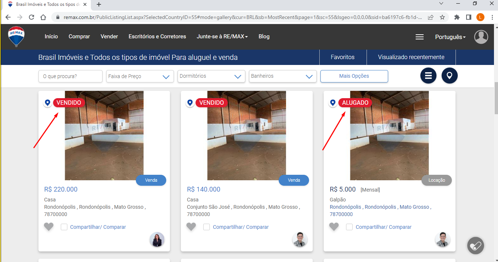
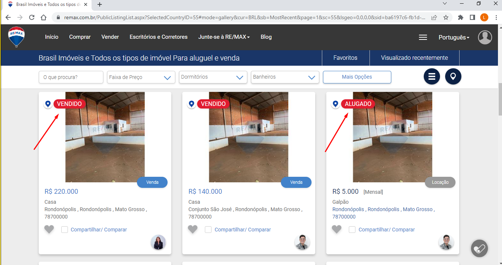

FAQ - Portal RE/MAX
Quanto tempo leva para um anúncio de imóvel vendido não estar mais disponível?
Os imóveis vendidos/ Locados permanecem no portal da RE/MAX com uma tarja de Vendido ou Locado durante 30 dias.
Esse artigo foi útil?
Quanto tempo leva para um anúncio de imóvel vendido não estar mais disponível?
Os imóveis vendidos/ Locados permanecem no portal da RE/MAX com uma tarja de Vendido ou Locado durante 30 dias.
Esse artigo foi útil?